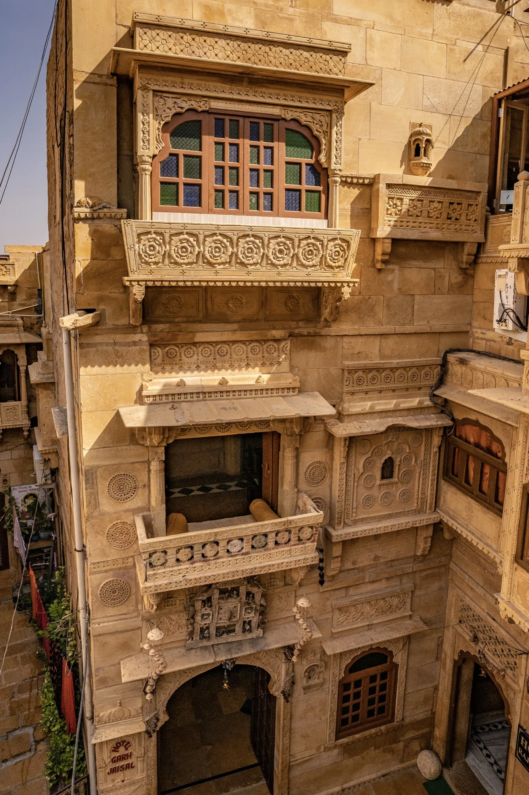

From Fort Parking
About 300 metres
Around 5–6 minutes on foot
The walk can take longer when the fort lanes are busy. Cars cannot reach the hotel door.

Getting here
Cars cannot reach the hotel door inside Jaisalmer Fort. Confirm your meeting point before setting out, and allow time for narrow lanes and uneven stone.
A MORE THOUGHTFUL STAY
Move from room research to experiences, dining and arrival planning in a few clear steps.
Getting here
Garh Jaisal Haveli is at Kotari Para, inside Jaisalmer Fort, Jaisalmer, Rajasthan 345001, India.
Cars cannot reach the hotel door. The last part is a walk through narrow fort lanes with uneven stone surfaces and steps. Before travelling, confirm where to meet, where to leave your vehicle and whether any luggage assistance can be arranged.
Open the map — exact hotel pinWalking distances
These approximate distances from the owner-maintained arrival guide help you plan the last part of the journey. Allow extra time for narrow lanes, uneven stone and busy periods.
From Fort Parking
About 300 metres
Around 5–6 minutes on foot
The walk can take longer when the fort lanes are busy. Cars cannot reach the hotel door.
From the fort entrance
About 200 metres
Around 3–4 minutes on foot
This is an orientation estimate, not turn-by-turn navigation. Confirm the meeting point and route before you set out.
Rickshaw access
Confirm for your date
Rickshaw access rules and drop-off points can vary. Contact the hotel before travelling to confirm where your vehicle should stop and where to meet.
Distances and walking times are approximate figures from the owner-maintained legacy arrival page, not live route measurements. Confirm current access, the meeting point and whether any assistance can be arranged before travelling.
Before you set out
Use the contact route on your booking confirmation to share your estimated arrival window, especially if you expect to arrive very early or late.
Because vehicles cannot reach the hotel door, confirm a suitable drop-off or meeting point for your route and follow the agreed walking directions.
Allow extra time for the final walk. If you need luggage assistance, ask whether it can be arranged; availability is not guaranteed.
Plan your arrival
Share your travel date and expected approach so the hotel can help confirm the current meeting point, walking route and any arrangements you want to ask about.
This form prepares a WhatsApp draft for you to review and send. It does not save your details, book a transfer or confirm a reservation. Do not enter sensitive personal information.
The interactive arrival enquiry builder is available only when this page can load the authorized WhatsApp destination. You can still confirm the meeting point, walking route and any assistance directly using contact details supplied by the hotel.
Arrival FAQs
No. Cars cannot reach the hotel door inside the fort. Confirm a suitable drop-off or meeting point for your route using the WhatsApp or phone link shown on this page, then follow the agreed walking directions.
Luggage assistance is not guaranteed by this page. Ask through the WhatsApp or phone link shown on this page whether help can be arranged for your arrival.
Reception hours and late-arrival arrangements have not been verified for publication here. Use the WhatsApp or phone link shown on this page to confirm whether your expected arrival can be accommodated.
The route includes narrow, uneven stone lanes and some steps. Before booking, confirm the route conditions and any assistance available for your specific mobility needs through a WhatsApp or phone link shown on this page.
Transport arrangements are not confirmed by this page. Ask whether a vehicle can be arranged for your route, and verify the provider, pickup point, fare and timing before relying on it.
Beyond the fort lanes
The source repository lists SUV and sedan arrangements across Rajasthan and Delhi, with drivers able to communicate in Hindi and English. Confirm route, vehicle, pickup, fare, timing and availability for the specific booking; no transfer is assumed or included.
Confirm arrival details before you travel
Use a WhatsApp or phone link shown on this page to confirm the current meeting point, walking approach and whether any assistance can be arranged for your date. The links use contact details sourced from the owner-authorized legacy repository; their live reachability has not been independently tested. Confirm the channel before you travel.

Recognise the building
The source photo shows a carved sandstone facade with the hotel name near the entrance. Use it to familiarise yourself with the building, not as a guaranteed pickup point or route marker. The current approach and meeting point can depend on where you arrive.
Before setting out, confirm the agreed meeting point and walking directions through a WhatsApp or phone link shown on this page. Vehicles cannot reach the hotel door.
See more locally hosted photographs →Before setting out
The fort setting means the final approach is on foot. Do not assume a vehicle can reach the door, that a particular meeting point is available, or that luggage assistance or a transfer is included.
Use a WhatsApp or phone link shown on this page to agree where to stop and which walking route to follow for your arrival date.
The lanes include narrow, uneven stone surfaces and steps. If mobility, heavy luggage or arrival timing is a concern, ask what can be arranged before travelling.
Check room details, dining options and experiences separately. Current rates, service hours, routes and inclusions require confirmation for your dates.
Room guidance → Experience options → Dining guidance →Review the locally hosted gallery for a visual introduction to the sandstone interior and rooftop setting.
View the gallery →